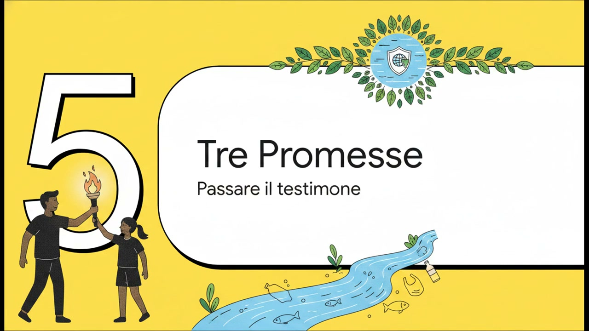

Terra dei Fuochi
L'agro nocerino-sarnese rientra nel perimetro storico della Terra dei Fuochi: un'area dove organizzazioni criminali hanno smaltito illegalmente per decenni rifiuti tossici, contaminando suolo e falde acquifere e dando origine ai famigerati roghi.